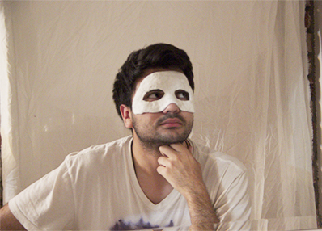

<!--START SLIDE-->

<div>
  <div class="table-cell-left">
    <h2>Dry Time</h2>
    <div style="width:360px;">
When you have put about 3 layers of plaster, then let it dry on your face until it gets hard and feels itchy.


</div>
  </div>
  <div class="table-cell-right">  </div>
</div>
<!--END SLIDE 1-->